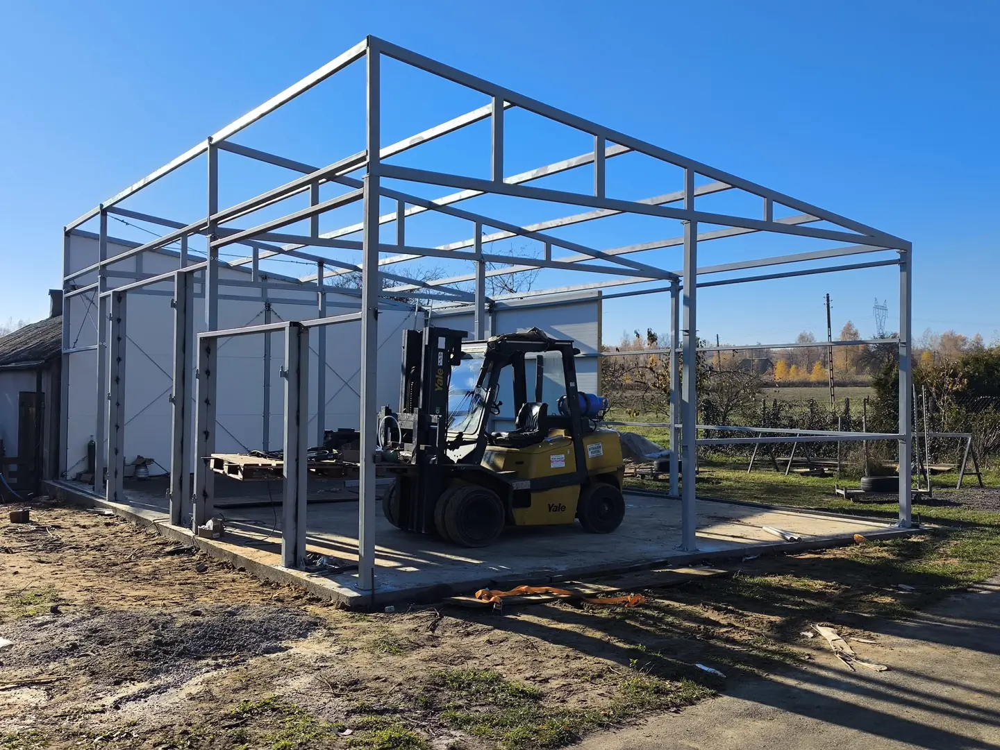
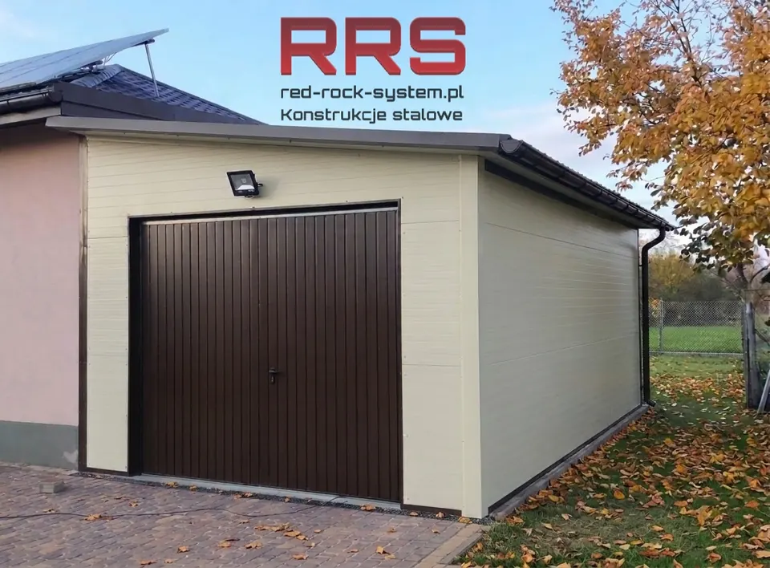
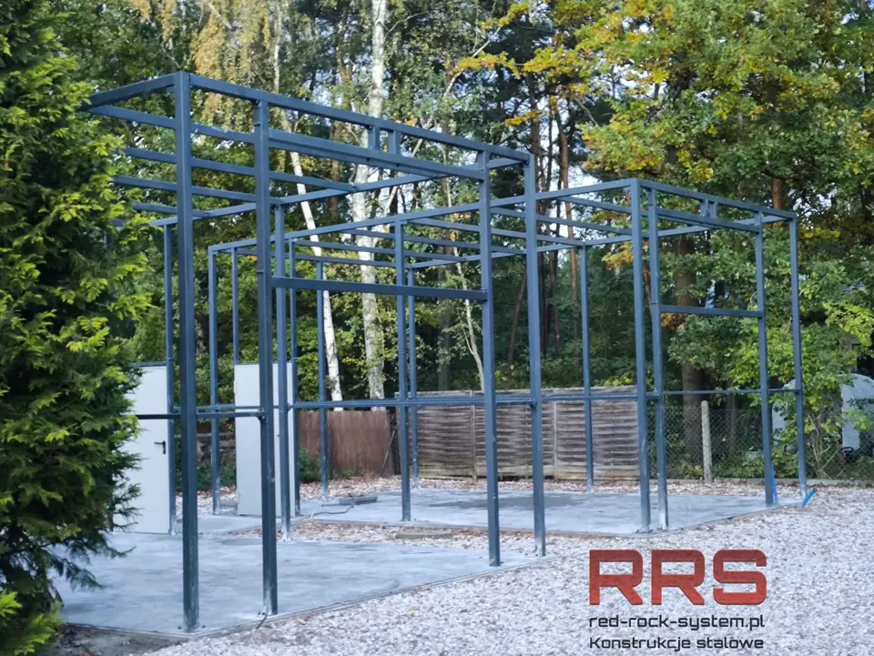

1/4
Budynek gospodarczy 5 × 7 m
dach dwuspadowy, kratownica 40×60
4,8 × 6,8 m
- Słupy pionowe
- 80×80×3
- Profile poziome
- 40×80×3
- Profile dachowe
- 40×60×3
- Kratownica
- 40×60×3 / 40×40×3
- Kąt dachu
- 21°
- Waga
- ok. 800 kg
8 600 złbrutto
Zamów ten model
Szkielety garaży, warsztatów i budynków gospodarczych do 70 m². Dostajesz stal przygotowaną do skręcenia i zakotwienia, rysunki 3D i instrukcję montażu.
Najbliższe wolne terminy realizacji: marzec 2027
Specjalizuję się w konstrukcjach do 70 m². Skupienie na tej niszy pozwala pilnować precyzji, której często brakuje przy masowych projektach.
Każda konstrukcja jest od razu przygotowana pod montaż płyty warstwowej (tzw. obornickiej). Płyta daje dobrą izolację, a budynek nie jest trwale związany z gruntem: w razie potrzeby można go rozebrać, przewieźć i złożyć w nowym miejscu.


Gotowe szkielety pod płytę PIR 10 cm. Wymiary bram dowolne, profile obwodowe pod płyty w pionie jako opcja. Blacha stopy 160×160×10 mm na kotwy fi 14, całość skręcana śrubami fi 12. Ceny brutto.
dach dwuspadowy, kratownica 40×60
8 600 złbrutto
Zamów ten modeldach jednospadowy na bok
7 000 złbrutto
Zamów ten modeldach jednospadowy na tył
7 000 złbrutto
Zamów ten modeldach dwuspadowy, kratownica 60×40
8 300 złbrutto
Zamów ten modeldach jednospadowy na bok
7 500 złbrutto
Zamów ten modeldach jednospadowy na tył
7 500 złbrutto
Zamów ten modelpod garaż, warsztat, budynek gospodarczy
5 200 złbrutto
Zamów ten modelpod garaż, warsztat, budynek gospodarczy
5 700 złbrutto
Zamów ten modelkomplet 3 szt.: front, środek, tył
3 800 złbrutto
Zamów ten modelkomplet 3 szt.: front, środek, tył
4 200 złbrutto
Zamów ten modelProjektuję też konstrukcje na zamówienie, np. mały warsztat samochodowy z dachem dwuspadowym, kratownicą 80×40 i wysokością 4 m + 1 m. Wyślij szkic albo zdjęcie, przygotuję wycenę.
Konstrukcja jest przygotowana do samodzielnego montażu: zakotwić, skręcić i można obkładać płytą.
Od szkieletu na płycie po gotowy garaż. Kliknij zdjęcie, żeby obejrzeć je w całości.
Nazywam się Michał Chojnacki. Zaczynałem jako spawacz w Stoczni Gdańskiej i w Stoczni Crist, potem w firmie Bemakor poznałem technologię płyt warstwowych. Tam nauczyłem się, że w stalowej konstrukcji każda spoina ma znaczenie.
Dziś przenoszę te same standardy na mniejsze budynki. Osobiście pilnuję każdego etapu: projekt, cięcie, spawanie, przygotowanie do montażu. Konstrukcje projektuję we współpracy z projektantem, żeby były bezpieczne i trwałe.
Nazwa mojej firmy nie jest przypadkowa. Nawiązuje do Red Rocks Amphitheatre w Kolorado, które odwiedziłem w 2008 roku. Ta sama pozytywna energia i pasja towarzyszą mi codziennie przy pracy ze stalą.
Michał Chojnacki, właściciel
Wybierz model albo opisz własny projekt. Odpowiem z wyceną, terminem i kosztem dostawy.
Najbliższe wolne terminy realizacji: marzec 2027
RED ROCK SYSTEM
Michał Chojnacki
ul. Polna 3, 98-105 Hipolitów (woj. łódzkie)
+48 780 103 823
michal@red-rock-system.pl
NIP 728-254-3688. Produkcja i montaż odbywają się głównie poza siedzibą firmy.